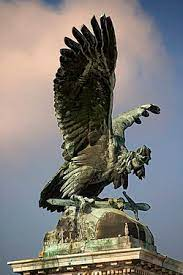
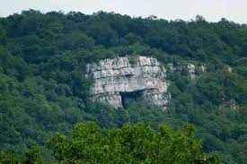

Tatabánya
Tatabányán rengeteg látnivaló van. Ezek közül csak párat emelnénk ki.
A Turul madár
A Turul madár Közép-Európa legnagyobb madárszobra. A Gerecse hegyen található és büszkén néz végig a városon.

A Szelim barlang
A szelim barlang egy eléggé nagy, és ismert hely. Kisebb monda is van mögötte. Több variáció is van de a legismertebb így szól: A török időkben 7 falu: Környe, Bánhida, Galla, Szőllős, Baj, Agostyán, és Tardos népe menekült ide és rejtőzött el a környéken dúló és fosztogató seregek elől. A törökök azonban észrevettek egy patakhoz lesurranó nőt, aki ivóvizet akart vinni szomjazó gyermekének. Ezután megtalál, kifüstölték és rabul ejtették a bentlévőket.
A Tulipános ház
A tulipános ház régen egy gyönyörű, igazából palota volt. Idősek ma is tiszti kaszinőnak emlegethetik, régen ez volt a funkciója. Cifra palotának is nevezik.